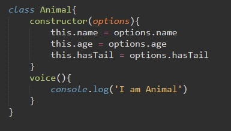
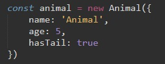
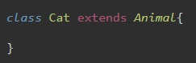
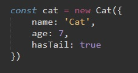
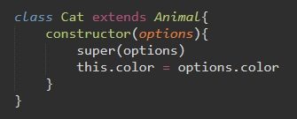
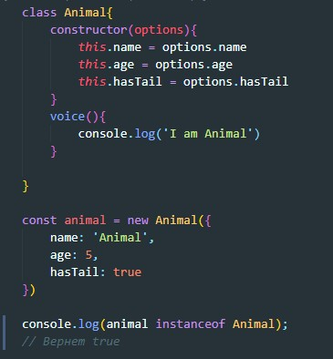
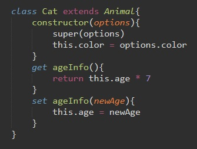

Классы в ООП - это расширяемый шаблон кода для создания объектов, который устанавливает в них начальные значения (свойства) и реализацию поведения (методы)
Объявление класса
Что бы проинициализировать свойства будущего объекта, нам необходимо внутри класса создать его конструктор. Для этого используем метод constructor и на вход даем ему некоторые опции (options). В фигурных скобка мы инициализируем наши свойства используя контекстное слово this.
Теперь что бы создать экземпляр класса (объект) мы пишем такой код:
После конструктора в теле класса мы можем указывать методы, которые будут наследовать объекты. Так в примере наш объект animal будет наследовать метод voice
Классы могут наследовать свойства и методы других классов. Например создадим класс Cat? который будет наследовать методы и свойства класса Animal
Теперь можно создать объект который будет прототипом класса Cat, но будет иметь свойства и методы класса Animal
Но что нам делать, если мы хотим классу Cat добавить собственный конструктор что бы проинициализировать дополнительные собственные свойства, например цвет?
Для этого в классе Cat мы пишем такой код:
В начале конструктора мы обязательно должны вызвать конструктор родительского класса при помощи метода super и на вход этому методу задаем параметр options/ Только после этого мы можем задавать дополнительные свойства дочернему классу.
instanseof - это выражение, которое проверяет является ли объект производным от определенного класса.
Логика геттеров и сеттеров аналогичная как и у объектов. Классу мы можем задать метод get который будет что то возвращать и метод set который может что-то принимать и обработать то, что он принял
пример
Теперь если обратиться в консоли к экземпляру класса Cat и просто вызвать метод cat.ageInfo, то сработает метод get
Если же этому методу задать параметр, то сработает метод set (cat.ageInfo = 20)
Мы создали класс Component. Создали внутри него конструктор в котором создали переменную $el в которую поместили селектор элемента.
Далее мы добавили два метода который скрывает и отображает наш элемент.
Затем мы создали дочерний класс Box у которого в конструкторе задали ширина = высоте = размеру + пиксели
Ну и конечно же цвет фона блока
В конце мы создали объект и задали ему селектор размер и цвет
С помощью ключевого слова statis мы можем обеспечивать инкапсуляцию. Методы объявленные с помощью слова static будут скрыты для внешнего мира, их область видимости будет только внутри класса, т.е нельзя будет к такому методу обратиться из вне